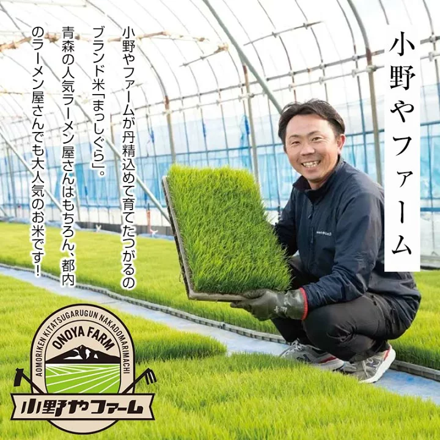

Iekei ramen is only complete when the rich soy-pork broth meets rice. You coat the rice in the tare left at the bottom of the bowl and finish every last grain. That is how Iekei is eaten, so Musashiya cares about the rice too.
We chose Masshigura, Aomori's pride. Onoya Farm grows it with care and ships it to Kichijoji right after harvest, keeping the distance between farm and table as short as possible.